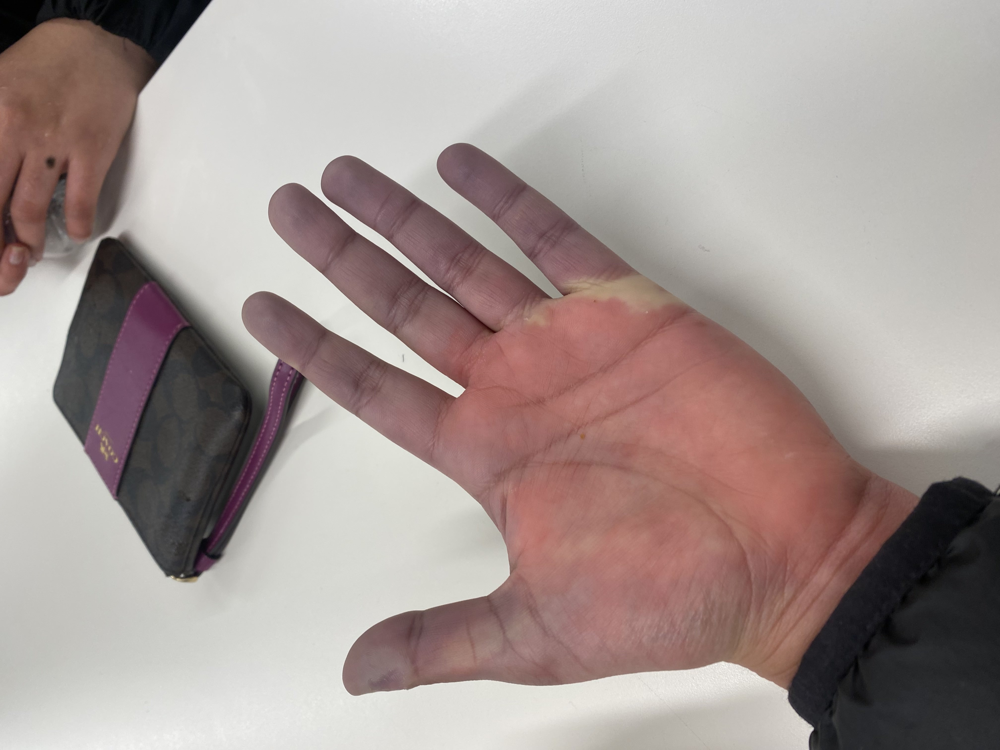
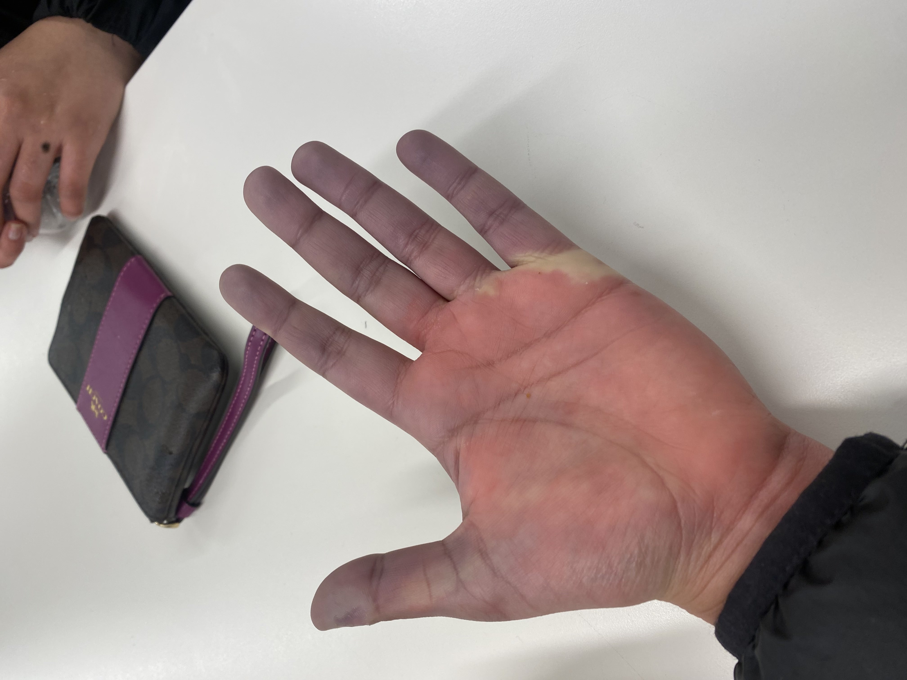

How to run with Raynaud's
12/29/24
I have a wonderful condition called Raynaud's phenomenon,
which means my hands go blue and numb in cold weather. Or when I hold something cold.
Or when I wash my hands in cold water. This makes running in the cold impossible. So I
run in the warm parts of the year and lift in the cold. The problem is that I impulsively
paid a couple hundred dollars to run two half marathons next year and the first one is
in February.
Raynaud’s is named after French medical student
Maurice Raynaud
who described it in 1862. Some of the causes are using a jackhammer,
an autoimmune disease, or my favorite, being assigned female at birth.
Fun fact, women are
generally
colder than men because they have less
muscle mass and thus a lower metabolic rate. Treatments are staying warm.
When we’re cold, our bodies redirect the blood from our fingers and toes to important
organs. Raynauds is an exaggerated response. If normal finger blood vessels constrict
a little, mine clamp down and stop blood flow in what’s called a vasospastic attack
(which checks out because my birth chart says I’m hypersensitive both emotionally
and physically).
 
